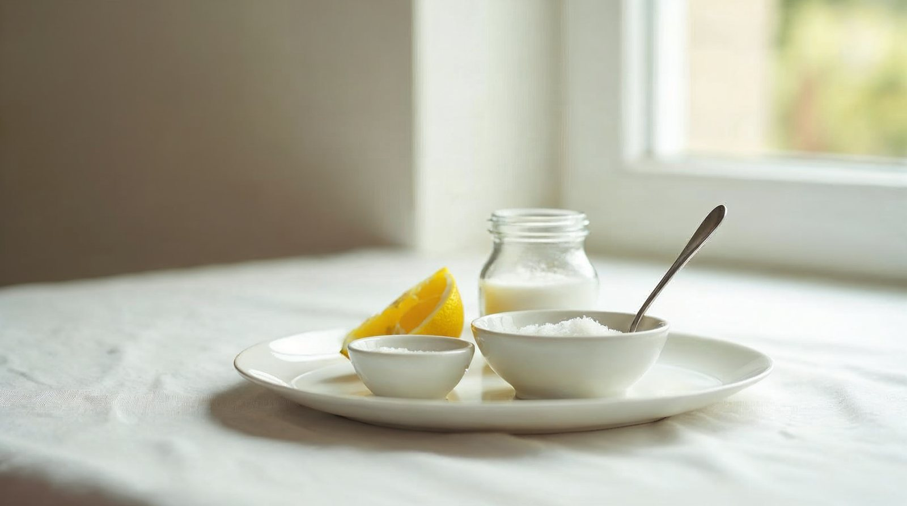
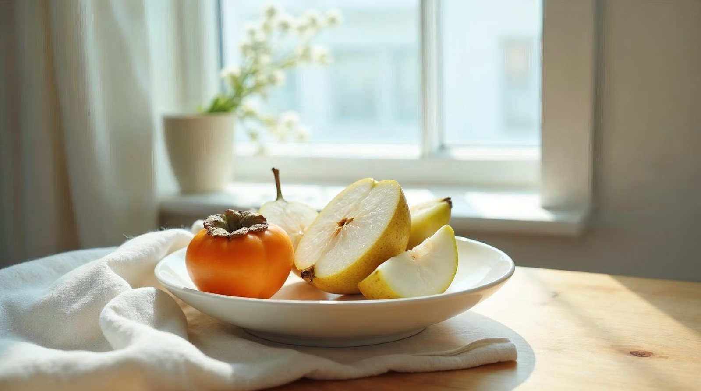

이종호 한의사 감수좋은꿈참사랑한의원 대표원장 (한의사 면허번호 19769)발행 2026-11-26 · 수정 2026-11-27
이 글의 차례
아침에 일어나 물을 한 모금 마셨는데 입안에 쓴맛이 확 퍼져요. 양치를 하고 나서도 혀 뒤쪽에 쓴 기운이 남아 있고요. 점심에 좋아하던 김치찌개를 먹어도 예전 같은 맛이 나지 않고, 간을 더 해 봐도 밍밍하기만 합니다. 밥 먹는 즐거움이 사라지니 식사가 숙제처럼 느껴지시죠.
진료실에서 "입이 써요", "뭘 먹어도 맛이 없어요"라는 말씀을 자주 들어요. 그런데 이게 두 개가 다른 얘기일 때가 많아요. '입맛이 없다'는 건 먹고 싶은 마음이 줄어든 거고, '맛이 달라졌다'는 건 맛을 느끼는 감각 자체가 바뀐 거거든요. 먹고 싶은 마음은 있는데 혀가 따라 주지 않는 셈이죠.
이렇게 맛을 느끼는 감각이 달라진 상태를 미각 이상이라고 불러요. 맛을 덜 느끼는 미각 저하, 없는 맛이 느껴지는 쓴맛이나 쇠맛, 원래 맛이 다르게 느껴지는 미각 왜곡까지 모양이 여러 가지예요. 어느 모양인지에 따라 살펴볼 방향이 조금씩 달라지고요.
맛은 혀만의 일이 아니에요. 혀의 맛봉오리, 침, 냄새를 맡는 코, 맛을 전달하는 신경, 그리고 몸 전체의 상태가 함께 만들어 내거든요. 감기로 코가 꽉 막힌 날 좋아하던 음식도 밍밍했던 기억을 떠올려 보시면 쉬워요. 그래서 저는 미각 이상을 말씀하시는 분께 입안, 코, 약, 영양, 소화, 잠을 차례로 나눠 여쭤봐요.

미각 이상은 어떤 모습으로 나타나나요?
가장 흔한 것은 맛이 밍밍하게 느껴지는 미각 저하입니다. 짠맛이나 단맛이 덜 느껴져 간을 자꾸 세게 하게 되고, 가족에게 음식이 짜다는 말을 듣고서야 알아차리는 분도 계십니다.
입안에 늘 쓴맛이나 쇠맛, 짠맛이 도는 경우도 있습니다. 아무것도 먹지 않았는데 맛이 느껴지고, 물을 마셔도 쓰게 느껴집니다. 아침에 심했다가 식사 뒤 덜해지는 분, 반대로 하루 종일 이어지는 분이 있습니다.
원래의 맛이 다르게 느껴지는 미각 왜곡도 있습니다. 단 음식이 쓰게 느껴지거나, 고기에서 쇠맛이 나거나, 좋아하던 음식이 역하게 느껴집니다. 이런 변화는 식사 자체를 피하게 만들어 체중과 기운까지 흔들 수 있습니다.
왜 맛이 달라질까요?
입안의 상태를 먼저 살핍니다. 침이 줄어 입이 마르면 맛 성분이 혀에 잘 녹아들지 않아 맛을 덜 느끼게 됩니다. 두꺼운 설태, 잇몸 염증, 충치, 맞지 않는 틀니, 곰팡이 감염도 입안에 쓴맛이나 이상한 맛을 남길 수 있습니다.
냄새 감각도 큰 몫을 합니다. 우리가 맛이라고 느끼는 것의 상당 부분은 사실 코로 맡는 향입니다. 감기나 비염, 축농증 뒤에 냄새를 덜 맡게 되면 음식 맛까지 밍밍하게 느껴집니다. 맛이 달라졌다면 냄새도 함께 달라졌는지 꼭 여쭙는 까닭입니다.
드시는 약도 꼭 살펴야 합니다. 일부 혈압약, 항생제, 무좀약, 갑상선약, 항암제, 수면제 가운데에는 쓴맛이나 쇠맛을 남기는 약이 있습니다. 약을 새로 시작한 시기와 맛이 달라진 시기가 겹친다면 혼자 끊지 마시고 처방한 선생님께 먼저 알려 주세요.
영양과 몸 전체의 변화도 드러납니다. 아연, 철분, 비타민 B12가 모자라면 혀의 맛봉오리가 제 일을 하기 어렵습니다. 혈당이 높게 이어지거나 갑상선 기능이 달라졌을 때, 콩팥이나 간의 기능이 떨어졌을 때도 맛이 변할 수 있습니다.
소화와 역류도 입맛과 가깝습니다. 위산이나 쓸개즙이 올라오면 아침에 입안이 쓰고 시큼한 맛이 돌기 쉽습니다. 늦은 야식이나 술 다음 날 입이 유독 쓰다면 이 갈래를 함께 떠올려 보시면 됩니다.
나이와 호르몬, 잠과 긴장도 영향을 줍니다. 나이가 들면서 맛봉오리와 침이 조금씩 줄고, 폐경 전후에는 입안이 마르며 맛이 달라지기도 합니다. 잠이 모자라거나 마음이 무거운 시기에는 같은 음식도 맛이 없게 느껴집니다.
비슷해 보이지만 다른 불편과는 어떻게 다른가요?
식욕부진은 먹고 싶은 마음 자체가 줄어드는 것이고, 미각 이상은 맛을 느끼는 감각이 달라진 것입니다. 맛이 없어서 입맛까지 떨어지는 분이 많아 둘이 겹치기도 하지만, 어느 쪽이 먼저였는지를 나눠 보면 살필 방향이 분명해집니다.
후각 저하는 냄새를 덜 맡는 것이 중심입니다. 꽃향기나 커피 향, 가스 냄새도 잘 모르겠다면 코 쪽을 먼저 살핍니다. 냄새는 그대로인데 짠맛과 단맛만 덜 느껴진다면 혀와 입안 쪽 이야기일 가능성이 큽니다.
구강작열감은 입안이 데인 듯 화끈거리는 것이 중심인데, 쓴맛이나 쇠맛이 함께 오는 분이 많습니다. 화끈거림이 있는지도 함께 여쭙습니다.
한의학에서는 입맛의 변화를 어떻게 보나요?
한의학에서는 입안의 맛을 몸 안의 상태를 비춰 보는 단서로 여겨 왔습니다. 입이 쓰면 위로 뜨는 열이나 쓸개 쪽의 흐름을, 입이 달고 텁텁하면 소화가 더디고 습한 기운이 쌓인 쪽을, 맛을 잘 못 느끼면 비위의 기운이 약해진 쪽을 함께 생각합니다.
입이 쓴 분 가운데에는 쉽게 짜증이 나고, 옆구리가 답답하며, 잠이 얕고 꿈이 많은 모습을 함께 말씀하시는 분이 많습니다. 맛이 밍밍한 분은 손발이 차고, 식사 뒤 졸리며, 설태가 희고 두꺼운 경우가 많습니다. 저는 이런 몸 전체의 흐름을 함께 읽습니다.
이런 살핌은 치과, 이비인후과, 혈액 검사를 대신하는 것이 아닙니다. 입안과 코, 약, 영양 같은 원인을 먼저 확인하고, 그 위에서 소화와 열, 잠과 긴장의 균형을 함께 살피는 방법이라고 생각해 주시면 됩니다.

계절과 생활에 따라 달라지는 입맛
겨울에는 감기와 코막힘이 잦아지면서 냄새와 맛이 함께 둔해지는 분이 많습니다. 난방으로 실내가 건조해지면 입이 마르고 쓴맛이 더 도드라지기도 합니다. 잠자리 습도를 맞추고 물을 조금씩 자주 드시면 아침의 입마름과 쓴맛이 덜할 수 있습니다.
여름에는 더위에 지치고 찬 음료를 자주 찾으면서 입이 텁텁하고 맛이 없다고 하십니다. 장마철처럼 습한 시기에는 몸이 무겁고 입안이 끈적이며 단맛이 도는 듯한 느낌을 말씀하시는 분도 계십니다.
담배를 피우시는 분은 맛과 냄새를 덜 느끼기 쉽고, 담배를 끊으면 몇 주에 걸쳐 맛과 냄새가 조금씩 돌아오는 경우가 많습니다. 술과 아주 매운 음식이 잦은 생활도 혀를 둔하게 만들 수 있어 함께 돌아봅니다.
미각 이상을 두고 자주 헷갈리는 것
첫째, 맛이 없으니 간을 세게 하면 된다는 생각입니다. 잠시 맛이 나아진 것처럼 느껴져도 짠맛이 계속 늘면 혈압과 붓기에 부담이 됩니다. 간 대신 향과 식감, 온도를 바꿔 보는 쪽을 권합니다.
둘째, 입이 쓰니 혀를 세게 닦아 내면 된다는 생각입니다. 혀 클리너로 너무 세게 긁으면 맛봉오리가 자극받아 오히려 맛을 덜 느끼게 될 수 있습니다. 부드럽게, 앞쪽으로 몇 번만 쓸어 주시면 충분합니다.
셋째, 나이 들면 원래 그렇다는 생각입니다. 나이에 따른 변화도 있지만, 약과 영양, 입마름처럼 살펴볼 수 있는 원인이 함께 있는 경우가 많습니다. 갑자기 달라졌다면 특히 한 번쯤 차근차근 나눠 보시길 권합니다.
먼저 이렇게 여쭙니다
처음 오시면 대략 이런 순서로 여쭙니다. 미리 떠올려 오시면 이야기가 수월해집니다.
- 맛이 언제부터, 어떤 맛이 어떻게 달라졌나요?
- 냄새도 함께 덜 맡아지나요? 최근 감기나 코막힘이 있었나요?
- 입이 마르거나, 화끈거리거나, 입냄새가 늘지는 않았나요?
- 아침에 입이 쓰고 신물이나 트림이 함께 오나요?
- 최근 새로 드시기 시작한 약이나 영양제가 있나요?
- 체중이나 식사량이 줄었나요? 잠은 어떠신가요?
모든 질문에 정확히 답하지 못하셔도 괜찮습니다. 맛이 달라지기 전후에 있었던 일, 예를 들어 감기나 새 약, 치과 치료를 떠올려 오시면 실마리를 찾는 데 큰 도움이 됩니다.
일상에서 먼저 해 볼 수 있는 것
입안을 깨끗하고 촉촉하게 지키고, 맛 대신 향과 식감으로 식사의 즐거움을 채우는 것이 첫걸음입니다. 하나씩 골라 일주일씩 해 보세요.
- 식사 전에 물로 입을 헹구고, 물을 조금씩 자주 머금기
- 혀는 부드럽게, 앞쪽으로 몇 번만 쓸어 주기
- 간을 세게 하기보다 깨, 들기름, 파, 생강, 레몬즙처럼 향으로 맛 더하기
- 쇠맛이 나면 금속 수저 대신 나무나 도자기 수저 써 보기
- 늦은 야식과 술 줄이고, 잠들기 세 시간 전에는 식사 마치기
- 음식을 천천히 오래 씹어 맛과 향이 퍼질 시간 주기
음식의 온도도 맛을 바꿉니다. 아주 뜨겁거나 차가운 음식은 맛을 덜 느끼게 하니, 미지근하게 식혀 드시면 맛을 조금 더 느끼실 수 있습니다. 같은 반찬이라도 바삭하거나 아삭한 식감을 곁들이면 식사가 덜 지루해집니다.
입이 쓴 아침에는 따뜻한 물 한 잔으로 입안을 헹구고, 가벼운 음식부터 시작해 보세요. 신맛이 약한 과일 한 조각이나 무가당 껌이 침을 돌게 해 쓴맛을 덜어 주기도 합니다.
혼자 드시는 식사가 많다면 일주일에 몇 번이라도 다른 사람과 함께 드시는 자리를 만들어 보세요. 맛의 감각이 떨어진 시기에는 함께 먹는 즐거움이 식사를 이어 가는 힘이 되기도 합니다. 좋아하는 그릇에 담거나 창가에 앉아 드시는 것처럼 작은 변화도 도움이 됩니다.
한의원에서 함께 살필 수 있는 경우
- 검사에서 큰 이상은 없다는데 입이 쓰거나 맛이 밍밍한 느낌이 이어지는 경우
- 입이 쓰면서 소화가 더디고 아침마다 속이 무거운 경우
- 맛이 달라진 뒤 식사량이 줄고 기운이 떨어진 경우
- 감기나 코막힘 뒤 냄새와 맛이 함께 둔해진 경우
- 긴장하거나 잠을 설친 날 입맛이 유독 쓰게 느껴지는 경우
좋은꿈참사랑한의원에서는 먼저 아래 '먼저 확인이 필요한' 신호가 없는지 살핀 뒤, 맥을 짚고 혀와 입안을 봅니다. 필요하면 배를 눌러 소화의 흐름도 확인합니다.
진찰한 내용을 바탕으로 침, 한약 상담, 생활 관리 가운데 지금 상태에 맞는 것을 정하고, 식사와 잠 가운데 바꿔 볼 것 하나를 함께 고릅니다. 맛이 달라진 뒤 식사량이 줄었다면 끼니를 지키는 방법도 함께 의논합니다. 한약을 상의할 때는 드시는 약을 모두 확인하고 신중하게 정합니다. 임신 중이라면 먼저 알려 주시고 산부인과와 상의해 주세요.
냄새까지 함께 달라졌다면 이비인후과 진료를, 입안에 염증이나 치아 문제가 보인다면 치과 진료를 함께 받으시도록 권합니다.
이렇게 기록해 오시면 상담이 쉬워집니다
맛의 변화는 시기와 생활의 연결이 큰 단서가 됩니다. 1~2주만 간단히 적어 보세요.
- 맛이 달라지기 시작한 때와 그 무렵 있었던 일
- 하루 중 쓴맛이나 이상한 맛이 심한 때
- 잘 느껴지는 맛과 덜 느껴지는 맛
- 그날 먹은 음식, 야식과 술
- 드신 약과 시각, 잠든 시각과 깬 시각
- 일주일에 한 번, 같은 시각에 잰 체중
기록을 나란히 놓고 보면 맛이 덜 이상했던 날과 심했던 날의 차이가 보이기 시작합니다. 야식을 먹은 다음 날, 잠을 설친 날, 특정 약을 먹은 뒤와 맛의 변화가 겹친다면 그것이 다음 걸음의 실마리가 됩니다. 맛이 조금이라도 살아났던 음식이 있다면 함께 적어 두세요. 그 음식이 앞으로의 식단을 꾸리는 출발점이 되기도 합니다.
맛을 잃어 식사가 숙제가 되신 분께
먹는 즐거움은 하루를 버티게 하는 작은 힘이에요. 맛이 달라지면 그 힘이 빠지면서 마음까지 가라앉기 쉽죠. 사소한 불편이 아니라는 걸 저는 진료실에서 먼저 말씀드리고 얘기를 시작해요. 좋아하던 음식이 낯설어진 서운함도 편하게 꺼내 놓으셔도 돼요.
미각의 변화는 하루아침에 돌아오기보다, 덜 쓴 날과 맛이 살아나는 음식이 조금씩 늘어나는 모양으로 변하는 경우가 많아요. 그 작은 변화를 알아차리는 데는 짧은 기록이 큰 도움이 되고요.
몸을 살피는 건 제가 맡을게요. 대신 하나만 부탁드려요. 향으로 맛 더하기와 늦은 야식 줄이기 가운데, 이번 주엔 하나만 골라 주세요. 딴 건 하시던 대로 편하게 하셔도 돼요. 좋아하는 음식을 끊으시라는 얘기도 아니에요.
다음에 오시면 그 기록을 함께 펼쳐 볼게요. 궁금한 건 그때 편하게 물어보세요.
이런 증상은 먼저 확인이 필요합니다
- 갑자기 얼굴 한쪽이 처지거나, 말이 어눌해지거나, 한쪽 팔다리에 힘이 빠지는 경우(맛의 변화와 함께 오기도 합니다)
- 입안에 2주 넘게 낫지 않는 헌 자리나 멍울이 있거나, 체중이 이유 없이 빠지는 경우
이런 신호가 있으면 한의원보다 가까운 병원이나 응급실을 먼저 찾으세요.
함께 읽으면 좋은 글
- 냄새를 잘 못 맡고 음식 맛까지 밍밍해진 후각 저하는 어떻게 살피나요?
- 입맛이 없고 밥이 잘 넘어가지 않는 성인 식욕부진은 어떻게 살피나요?
- 양치를 해도 입냄새가 신경 쓰일 때, 입·코·속의 원인은 어떻게 나눠 살피나요?
- 혀에 하얗거나 노란 막이 끼는 설태는 무엇을 뜻하나요?
- 속쓰림과 신물이 오래 갈 때 어떤 점을 살펴보고, 언제 검사를 받아야 하나요?

여쭙는 것
- 맛이 언제부터, 어떤 맛이 어떻게 달라졌나요?
- 냄새도 함께 덜 맡아지나요? 최근 감기나 코막힘이 있었나요?
- 입이 마르거나, 화끈거리거나, 입냄새가 늘지는 않았나요?
생활에서 해 볼 것
- 식사 전에 물로 입을 헹구고, 물을 조금씩 자주 머금기
- 혀는 부드럽게, 앞쪽으로 몇 번만 쓸어 주기
- 간을 세게 하기보다 깨, 들기름, 파, 생강, 레몬즙처럼 향으로 맛 더하기
한의원에서 함께 살필 것
- 검사에서 큰 이상은 없다는데 입이 쓰거나 맛이 밍밍한 느낌이 이어지는 경우
- 입이 쓰면서 소화가 더디고 아침마다 속이 무거운 경우
- 맛이 달라진 뒤 식사량이 줄고 기운이 떨어진 경우
먼저 확인이 필요한 신호
- 갑자기 얼굴 한쪽이 처지거나, 말이 어눌해지거나, 한쪽 팔다리에 힘이 빠지는 경우(…
- 입안에 2주 넘게 낫지 않는 헌 자리나 멍울이 있거나, 체중이 이유 없이 빠지는 경우
한눈에 보는 표
| 구분 | 핵심 |
|---|---|
| 여쭙는 것 | 맛이 언제부터, 어떤 맛이 어떻게 달라졌나요? 냄새도 함께 덜 맡아지나요? 최근 감기나 코막힘이 있었나요? |
| 생활에서 해 볼 것 | 식사 전에 물로 입을 헹구고, 물을 조금씩 자주 머금기 혀는 부드럽게, 앞쪽으로 몇 번만 쓸어 주기 |
| 한의원에서 함께 살필 것 | 검사에서 큰 이상은 없다는데 입이 쓰거나 맛이 밍밍한 느낌이 이어지는 경우 입이 쓰면서 소화가 더디고 아침마다 속이 무거운 경우 |
| 먼저 확인이 필요한 신호 | 갑자기 얼굴 한쪽이 처지거나, 말이 어눌해지거나, 한쪽 팔다리에 힘이 빠지는 경우(맛의 변화와 함께 오기도 합니다) 입안에 2주 넘게 낫지 않는 헌 자리나 멍울이 있거나, 체중이 이유 없이 빠지는 경우 |
자주 묻는 질문
아침마다 입이 쓴 것은 무엇 때문인가요?
잠든 동안 입이 마르거나, 위산이나 쓸개즙이 올라오거나, 전날의 야식과 술, 드시는 약이 원인이 될 수 있습니다. 저녁 식사 시각과 잠, 소화를 함께 살펴봅니다.
맛이 안 느껴져서 간을 세게 하는데 괜찮을까요?
짠맛이 계속 늘면 혈압과 붓기에 부담이 될 수 있습니다. 깨, 들기름, 파, 생강, 레몬즙처럼 향으로 맛을 더하고, 식감과 온도를 바꿔 보시길 권합니다.
감기 뒤에 맛과 냄새를 잘 못 느끼는데 기다리면 돌아오나요?
시간이 지나며 돌아오는 분이 많지만 오래 걸리는 분도 있습니다. 냄새까지 함께 달라졌다면 이비인후과 진료를 함께 받으시길 권하고, 한의원에서는 코와 몸 전체의 회복을 함께 살핍니다.
약을 먹고 나서 입에서 쇠맛이 나면 어떻게 하나요?
혼자 끊지 마시고 처방한 선생님께 먼저 알려 주세요. 약을 바꾸거나 시각을 조정해 나아지는 경우도 있습니다. 그동안 나무 수저를 써 보시는 것도 방법입니다.
좋은꿈참사랑한의원은 재진 때 지난번 이야기부터 이어서 여쭙니다. 진료시간과 예약은 오시는 길에서 확인하세요.
어디서 상담받을 수 있나요?
좋은꿈참사랑한의원은 서울 동작구 만양로2길 2 신성빌딩 3층·5층(서울 동작구 상도동, 7호선 상도역 3번 출구 근처)에 있습니다. 한의사 3명(이종호 대표원장, 조영기 수석진료원장, 정원영 진료원장)이 진료합니다. 진료시간은 평일 09:30~20:00(점심 13:00~14:00), 토·일·공휴일 09:30~15:00이며, 방문 전 전화로 확인을 권합니다. 예약은 네이버 예약, 카카오톡 상담, 전화 02-815-7510로 받습니다.
이 글은 일반적인 건강 정보이며 개인의 진단이나 치료를 대신하지 않습니다. 증상이 있거나 복용 중인 약이 있다면 진료를 통해 확인하세요. 치료 효과는 개인마다 다를 수 있습니다.
작성 기준: 일반적으로 알려져 있는 건강 정보를 참고해 정리했습니다(대표원장 감수). 증상 기록은 1~2주 동안 하루 1회, 비슷한 시간에 적어 오시면 지난 상태와 비교하기 쉽습니다.